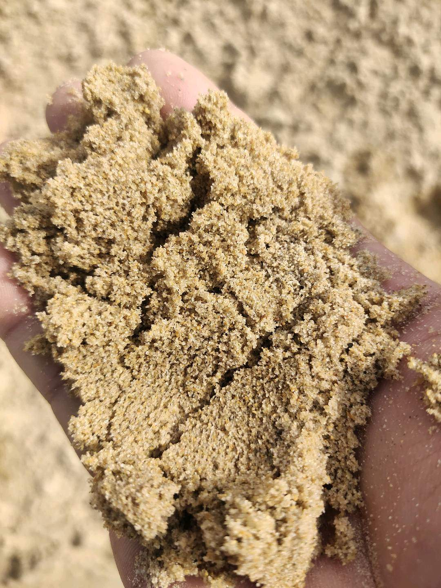

2026-09-30
Clinker-Free Cement Partnership Raises Qualification Bar
A new French housing partnership moves clinker-free cement closer to project selection, where technical approval, repeatable performance and supply readiness determine whether adoption can scale.
无熟料水泥合作项目提高工程认证门槛
法国一项新的住房合作把无熟料水泥进一步推向项目选材阶段；能否规模化应用，将取决于技术批准、性能可重复性与供应准备度。

Hoffmann Green announced on 28 September 2026 that it had signed a partnership with Aquitanis, the public housing authority for Bordeaux Métropole. The parties plan to explore opportunities to integrate the producer's 0% clinker cements into housing and urban-development projects in Nouvelle-Aquitaine. The announcement is a useful clinker-free cement project qualification signal, but it does not identify a committed project volume or completed deployment.
1. A partnership opens a project pathway
Aquitanis manages nearly 21,000 homes and develops new social-rental and affordable-ownership projects each year, according to the original announcement. That portfolio can create repeated opportunities to assess lower-carbon binders across real applications. The commercial value, however, begins when an opportunity becomes a defined project with an accepted specification, approved mix design and clear responsibility for testing and conformity.
2. Project qualification remains application-specific
Housing and urban works can involve foundations, structural elements, precast products and non-structural applications with different performance requirements. Buyers and project teams therefore need evidence for the actual formulation, including strength development, durability, workability, curing response and compatibility with local standards. The source announcement describes a partnership and intended exploration; it should not be read as proof that every application has already been approved.
3. Scale requires repeatable materials and logistics
Once a formulation is accepted, dependable production and delivery become as important as laboratory performance. Feedstock control, batch consistency, storage, transport and contingency planning all influence whether approved concrete can be reproduced across sites. The same discipline applies to conventional supplementary cementitious materials such as GGBFS: qualify the actual source, define acceptance criteria and align supply with the construction programme. The announcement does not state that this partnership uses GGBFS.
Takeaway: Partnerships can create demand pathways for clinker-free cement, but scalable adoption is earned project by project. Technical approval, repeatable production and executable supply must move together before an innovation becomes a dependable procurement option. Source: Hoffmann Green, published 28 September 2026.
Hoffmann Green 于 2026 年 9 月 28 日宣布，与波尔多都会区公共住房机构 Aquitanis 签署合作协议。双方计划探索在法国新阿基坦大区的住房及城市开发项目中采用该生产商所称的“0% 熟料水泥”。这一动态为无熟料水泥项目认证提供了新的市场信号，但公告并未披露已确定的项目用量或已经完成的落地应用。
1. 合作协议打开项目导入通道
根据原始公告，Aquitanis 管理近 21,000 套住房，并持续开发社会租赁住房与可负担产权项目。这样的项目组合可以为低碳胶凝材料提供反复评估的真实场景。但商业价值真正形成，要等到合作机会转化为具体项目，并落实可接受的技术规范、获批配合比，以及明确的检测与合格评定责任。
2. 工程认证仍需针对具体用途
住房和城市工程可能涉及基础、结构构件、预制制品及非结构用途，不同场景的性能要求并不相同。因此，采购方和项目团队需要针对实际配方验证强度发展、耐久性、工作性、养护响应以及与当地标准的相容性。原始信息披露的是合作关系和探索意向，不能据此推定所有用途都已完成批准。
3. 规模化依赖稳定材料与可执行物流
一旦配方获批，稳定生产与按期交付就会和实验室性能同等重要。原料控制、批次一致性、仓储、运输和备用方案，都会影响已批准的混凝土能否在不同项目现场稳定复制。传统补充性胶凝材料同样遵循这一逻辑，例如矿渣粉（GGBFS）也需要对实际货源进行认证、明确验收标准，并让供应节奏匹配施工计划。原公告并未说明该合作采用 GGBFS。
结论：合作协议可以为无熟料水泥创造需求通道，但规模化应用仍要逐个项目建立。只有技术批准、稳定生产与可执行供应同步推进，创新材料才会成为可靠的采购选项。来源：Hoffmann Green，发布于 2026 年 9 月 28 日。